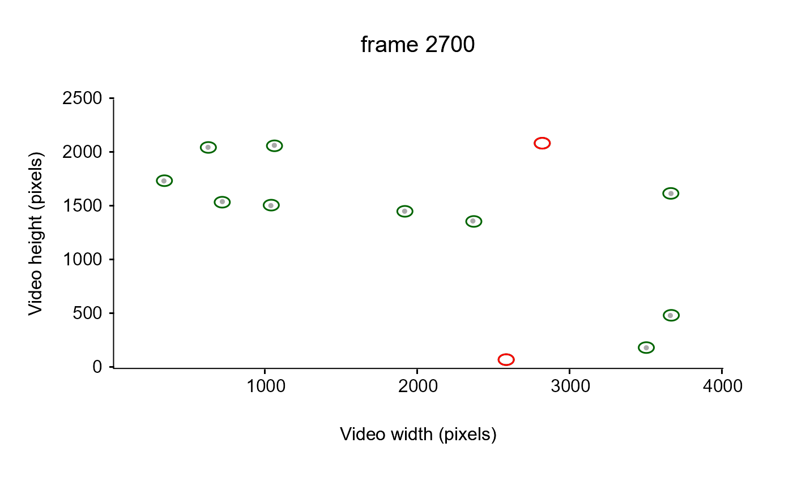
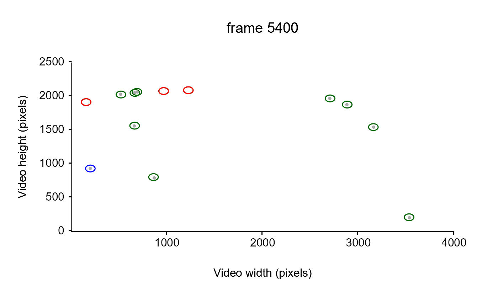
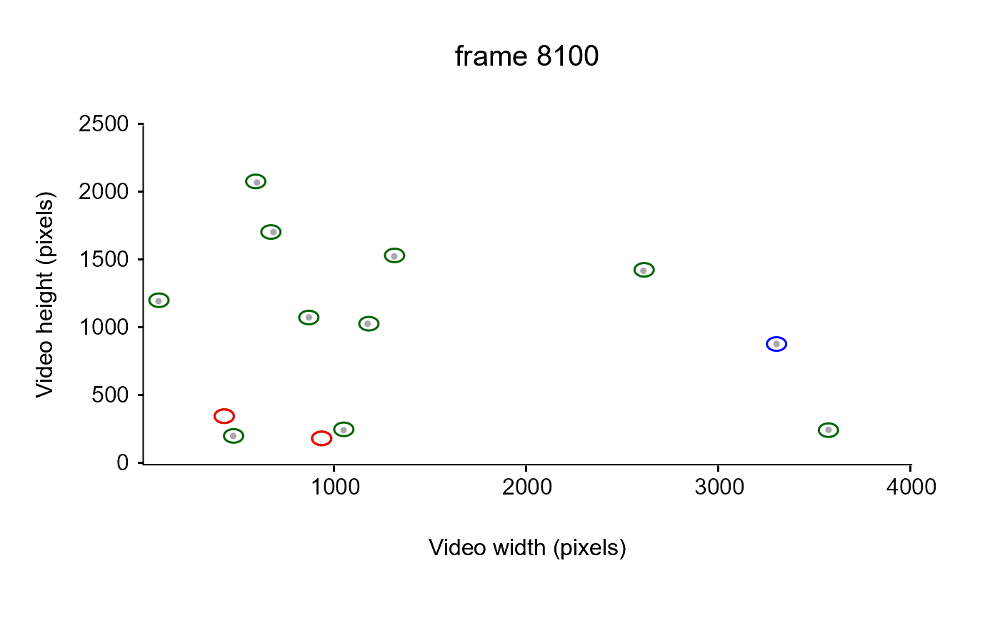
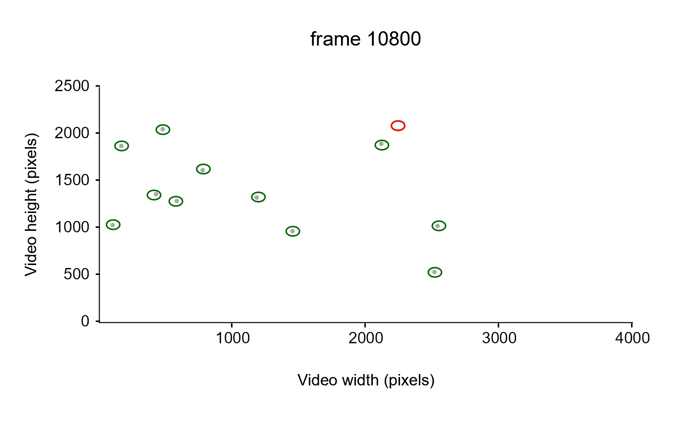

Given a list of tracklets containing cartesian coordinates of particles over time and a dataframe containing the "true" (i.e., manually detected) coordinates of the particles, this function compare the location of the particles performed manually and by the tracking software to return a list of informations related to sensitivity analysis:
"SensitivityStats": a dataframe containing 4 columns summarizing the sensitivity analysis results:
"mean": the mean sensitivity index (if particles positions are compared to manual detection over several time units).
"n": the number of sensitivity index performed.
"sd": the standard deviation of the mean sensitivity index.
"se": the standard error of the mean sensitivity index.
"SensitivityDetails": a dataframe containing 2 columns which gives the detailed results of the sensitivity analyses:
"sensitivity": the sensitivity indices computed over each time unit).
"timeCol": the time unit at which each sensitivty index have been computed.
"FalseNegative": a dataframe containing 3 columns which gives the position and time of manually detected particle's that have not been detected by the tracking method:
"x.pos": the x position of the manually detected particle's that have not been detected by the tracking method (from refDat).
"y.pos": the y position of the manually detected particle's that have not been detected by the tracking method (from refDat).
"timeCol": the time unit at which manual detection have been performed (from refDat).
"FalsePositive": a dataframe containing 10 columns which retrieves the informations of the particles that have been detected by the tracking method but is not truly present (i.e., not detected via manual observation):
"see
readCtrax,readTrackR,readTrex,readIdtracker"
Usage
evalSens(
trackDat,
refDat,
radius = 20,
imgRes = c(NA, NA),
timeCol = "frame",
progress = TRUE
)Arguments
- trackDat
A list of data frame containing tracking information for each tracklet (i.e., x.pos, y.pos, frame).
- refDat
A dataframe containing "true" x and y coordinates of the particles (e.g., manually detected using imageJ) as well as a column specifying the time (e.g., frame). In case the the particles are located over several time unit (i.e., location of particles for several frames), sensitivity index is averaged and Sd, Se and n are returned.
- radius
A numeric value expressed in the same unit than x and y and corresponding to the radius of the circles used to determine whether values are considered similar to those within the refDat or not (default = 20).
- imgRes
A vector of 2 numeric values, the resolution of the video used as x and y limit of the plot (i.e., the number of pixels in image width and height). If imgRes is unspecified, the function retrieve it using x and y maximum values + 5%.
- timeCol
A character string corresponding to the name of the column containing time information (default = "frame")
- progress
A logical value (i.e., TRUE or FALSE) indicating whether a progress bar should be displayed to inform process progression (default = TRUE).
Value
A list of dataframes summarizing the results of the sensitivity analysis:
"SensitivityStats": sensitivity index, n, standard deviation, standard error (sd, se are only computed if refDat contains particle's position over several time units).
"SensitivityDetails": a data frame containing detailed sensitivity index and time units on which test have been performed.
"FalseNegative": the list of the False negative (i.e., manually detected particle's that have not been detected by the tracking method.
"FalsePositive": the list of the false positive (i.e., the informations of the particles that have been detected by the tracking method but is not truly present (i.e., not detected via manual observation).
Examples
## Not run:
# Download the first dataset from the sample data repository
Path2Data <- MoveR::DLsampleData(dataSet = 1, tracker = "TRex")
Path2Data
#> [1] "C:\\Users\\quent\\AppData\\Local\\Temp\\RtmpmYFHq7\\MoveR_SampleData-main\\sample_1\\TRexOutput"
#> [2] "C:\\Users\\quent\\AppData\\Local\\Temp\\RtmpmYFHq7\\MoveR_SampleData-main\\sample_1\\ReferenceData\\DistMatrixFromArenaEdge_2602_ISA3080_Low_5.mov_1800.txt"
#> [3] "C:\\Users\\quent\\AppData\\Local\\Temp\\RtmpmYFHq7\\MoveR_SampleData-main\\sample_1\\ReferenceData\\RefDat_2602_ISA3080_Low_5.csv"
# Import the list containing the 9 vectors classically used for further computation
Data <- MoveR::readTrex(Path2Data[[1]],
flipY = T,
imgHeight = 2160)
# convert it to a list of tracklets
trackDat <- MoveR::convert2Tracklets(Data[1:7], by = "identity")
# load the reference dataset (a dataframe containing manually detected position of the particle's over time unit)
refDat <-
read.csv(Path2Data[[3]],
dec = ".",
sep = ";")
# perform the sensitivity analysis
## NB: here NAs are introduced because some tracklets in the raw data have Inf values in x and y.pos, which usually produce a warning message
## here the warning has been silenced but in this case sensitivity analysis should be preceded by a filtering step to remove Inf values (see \code{\link{filterTracklets}})
w <- getOption("warn")
options(warn = -1)
sensitivity <- MoveR::evalSens(
refDat = refDat,
trackDat = trackDat,
radius = 50,
imgRes = c(3840, 2160),
timeCol = "frame"
)
options(warn = w)
# check the results
str(sensitivity)
#> List of 4
#> $ SensitivityStats :'data.frame': 1 obs. of 4 variables:
#> ..$ mean: num 0.863
#> ..$ n : int 4
#> ..$ sd : num 0.0527
#> ..$ se : num 0.0263
#> $ SensitivityDetails:'data.frame': 4 obs. of 2 variables:
#> ..$ sensitivity: num [1:4] 0.867 0.8 0.857 0.929
#> ..$ frame : int [1:4] 2700 5400 8100 10800
#> $ FalseNegative :'data.frame': 8 obs. of 3 variables:
#> ..$ x.pos: num [1:8] 2814 2577 155 965 1223 ...
#> ..$ y.pos: num [1:8] 2096.3 81.9 1917.3 2081.1 2093.3 ...
#> ..$ frame: int [1:8] 2700 2700 5400 5400 5400 8100 8100 10800
#> $ FalsePositive :'data.frame': 2 obs. of 8 variables:
#> ..$ maj.ax : num [1:2] 18 19.7
#> ..$ angle : num [1:2] 1.4 1.73
#> ..$ min.ax : num [1:2] NA NA
#> ..$ x.pos : num [1:2] 199 3297
#> ..$ y.pos : num [1:2] 934 891
#> ..$ identity : num [1:2] 4 3
#> ..$ frame : num [1:2] 5400 8100
#> ..$ trackletId: chr [1:2] "4" "3"
# visualize it
# Draw the particle detected by the tracking method
# and add the position of the good detections (darkgreen),
# false negative and positive (red and blue, respectively)
# at a given time unit
## retrieve the frame at which the analysis has been performed
TimeF <- unique(refDat[["frame"]])
# display the results
for (i in seq_along(TimeF)) {
MoveR::drawTracklets(
trackDat,
timeWin = list(c(TimeF[[i]], TimeF[[i]])),
main = paste("frame", TimeF[[i]], sep = " "),
colGrad = "darkgrey",
legend = FALSE,
add2It = list(
MoveR::circles(
refDat[which(refDat[["frame"]] == TimeF[[i]]), "x.pos"],
refDat[which(refDat[["frame"]] == TimeF[[i]]), "y.pos"],
border = "darkgreen",
radius = 50,
Res = 1000,
lwd = 1.5,
lty = 1
),
if (length(sensitivity$FalseNegative$x[sensitivity$FalseNegative$frame == TimeF[[i]]]) > 0) {
MoveR::circles(
x = sensitivity$FalseNegative$x[sensitivity$FalseNegative$frame == TimeF[[i]]],
y = sensitivity$FalseNegative$y[sensitivity$FalseNegative$frame == TimeF[[i]]],
border = "red",
radius = 50,
Res = 1000,
lwd = 1.5,
lty = 1
)
},
if (length(sensitivity$FalsePositive$x.pos[sensitivity$FalsePositive$frame == TimeF[[i]]]) > 0) {
MoveR::circles(
x = sensitivity$FalsePositive$x.pos[sensitivity$FalsePositive$frame == TimeF[[i]]],
y = sensitivity$FalsePositive$y.pos[sensitivity$FalsePositive$frame == TimeF[[i]]],
border = "blue",
radius = 50,
Res = 1000,
lwd = 1.5,
lty = 1
)
}
)
)
}




## End(Not run)